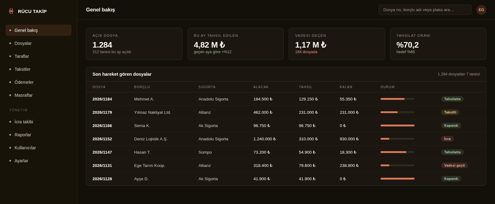
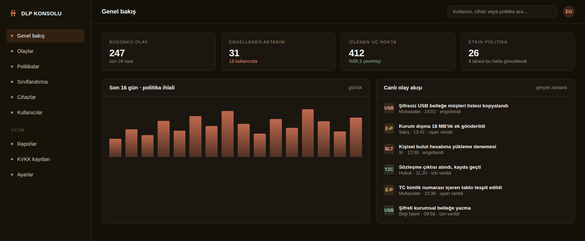

Rücu Takip Sistemi
Çözdüğü sorun
Rücu dosyaları Excel tablolarında takip ediliyordu. Kim hangi taksiti ödedi, hangi dosyanın süresi doldu, bu ay ne kadar tahsil edildi — bunların cevabı her seferinde elle çıkarılıyor, çıkarıldığı anda da eskiyordu.
Rücu dosyalarının açılışından tahsilatın kapanmasına kadar tüm süreci tek yerde toplayan sistem. Taksitler, ödemeler, masraflar ve faiz hesapları elle tutulan tablolardan çıkarılıp denetlenebilir bir yapıya alındı. Yıllar önce kurulmuş eski bir veritabanındaki tüm geçmiş dosyalar, hiçbiri kaybolmadan yeni sisteme aktarıldı. Sistem kurum içi sunucuda çalışabildiği için dosya verisi hiçbir zaman kurum dışına çıkmıyor.

Kullanılan teknoloji
Öne çıkanlar
- Dosya, taraf, taksit ve ödeme takibi tek ekranda
- Masraf ve faiz hesaplarının otomatik yürütülmesi
- Eski sistemden eksiksiz veri aktarımı
- Gelen e-postaları okuyup dosyayla eşleştirme
- Belgelerden OCR ile bilgi çıkarma
- Vadesi geçen dosyalarda otomatik uyarı
- Tahsilat oranının anlık takibi
- Kurum içi sunucuda çalışabilme
Veri Sızıntısı Önleme (DLP)
Çözdüğü sorun
Kurum verisinin nereye gittiği bilinmiyordu. Bir çalışan müşteri listesini USB belleğe kopyalasa ya da kişisel e-postasına gönderse kimsenin haberi olmuyordu — KVKK denetiminde ise bunun kaydını göstermek gerekiyor.
Kurum içindeki verinin izinsiz biçimde dışarı çıkmasını engelliyoruz: e-posta ekleri, USB bellekler, bulut yüklemeleri ve yazıcı çıktıları dahil. Hangi verinin hassas olduğu önce sınıflandırılıyor, sonra o veriye dokunan her hareket kayda geçiyor. Politikalar kuruma özel yazılıyor; herkese aynı kalıbı uygulamıyoruz.

Kullanılan teknoloji
Öne çıkanlar
- Hassas veri sınıflandırma ve etiketleme
- USB, e-posta ve bulut çıkışlarının denetimi
- Politika ihlallerinin anlık raporlanması
- KVKK kapsamında kayıt ve delil üretimi
- Uç nokta bazında canlı izleme
- Kuruma özel politika tasarımı
- Yazıcı çıktılarının kayda geçmesi
- Periyodik gözden geçirme raporları
Ağır Hasar Süreç Yönetimi
gokhan.ai — Yapay zeka çalışma alanı
Çözdüğü sorun
Çalışanlar herkese açık yapay zeka araçlarına kurum belgelerini yüklüyordu. Ne yüklendiği, kimin yüklediği ve o verinin nereye gittiği bilinmiyordu.
Çalışanların Excel, PDF ve Word belgelerini yükleyip yapay zekaya sorabildiği, kurum tarafından yönetilen kapalı bir çalışma alanı. Kim ne zaman ne yaptı kayıt altında; buna karşılık sohbetler kişiye özel, yöneticiler dahi içeriğini göremiyor. KVKK aydınlatma metni onaylanmadan hiçbir ekran açılmıyor; yeni bir cihazdan giriş yapıldığında ayrıca işaretleniyor.

Kullanılan teknoloji
Öne çıkanlar
- Excel, PDF ve Word yükleyip analiz ettirme
- Kullanıcı yönetimi ve giriş kayıtları
- KVKK aydınlatma metni ve onay kaydı
- Cihaz tanıma ve yeni cihaz uyarısı
- Kullanıcı başına kullanım sınırı
- Sohbetler kişiye özel — yönetici göremez
- Telefon ve bilgisayardan aynı deneyim
- Belgeler sunucuda özetlenerek maliyet düşürülür